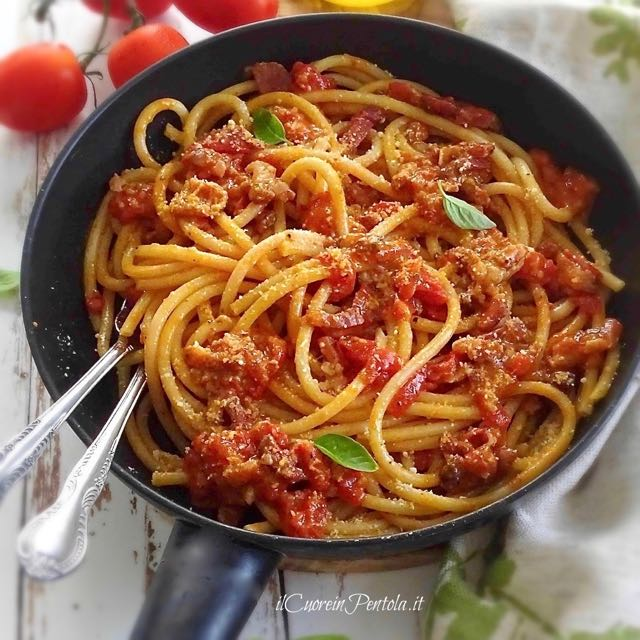

I Suppli
Queste deliziose palline di riso impanate e fritte nella loro ricetta originale sono talmente ripiene di provatura (formaggio filante simile alla mozzarella) che, una volta aperte, formeranno un lungo filo: come quello del telefono, per chi se lo ricorda naturalmente.
La tradizione inoltre vuole che il cuore di formaggio venga accompagnato da ingredienti molto saporiti come funghi e rigaglie di pollo. Oggi a Roma le supplì si possono trovare in una miriade di versioni, dalla più classica al sugo di carne alle più fantasiose in veste “gourmet”.
Filetti di baccalà
Altro protagonista della tradizione ebraica, il baccalà fritto in pastella è un’istituzione romana dello street food. Considerato un ingrediente della cucina povera, anticamente veniva incorporato nei “pezzetti” che, racconta Ada, erano e sono tutt’ora, benché molto detronizzati, una specialità delle friggitorie romane. Si tratta di una frittura con la pastella composta per lo più di piccoli pezzi di broccoli, cavolfiori, patate, zucca gialla, striscette di baccalà, ecc., che in altri tempi si vendevano a cinque per un soldo. Una specialità della cosiddetta “Roma sparita” per cui si faceva la fila e che spesso veniva consumata in compagnia di un bel bianco dei Castelli.
Carbonara

La pasta alla carbonara è un piatto caratteristico del Lazio, e più in particolare di Roma, preparato con ingredienti popolari e dal gusto intenso. I tipi di pasta tradizionalmente più usati sono gli spaghetti e i rigatoni.
Si racconta che il famoso piatto abbia preso il nome dai boscaioli degli appennini che raccoglievano la legna per farne carbone. Questi ultimi cucinavano la pasta alla carbonara usando gli ingredienti facilmente reperibili e conservabili, il guanciale e le uova. Componenti che spesso si portavano dietro nei periodi in cui sorvegliavano la carbonaia ed erano lontani da casa per lunghi periodi.
Amatriciana

Si dice che questo famoso piatto nato ad Amatrice fosse il pasto principale dei pastori, ma originariamente era senza pomodoro e prendeva il nome di “gricia”; questo ingrediente fu aggiunto in seguito quando i pomodori vennero importati dalle Americhe e il condimento prese il nome di Amatriciana. E’ quindi normale che una ricetta così antica e popolare si sia trasformata nel tempo assumendo le numerose varianti di cui ancora si discute al giorno d’oggi. Quella che vi proponiamo qui è la nostra versione, preparata con ingredienti locali e di qualità. Perché pensiamo che in realtà la ricetta degli spaghetti all’Amatriciana non divida l’Italia, bensì la unisca nel nome della bontà di una pietanza dall’animo semplice e dal carattere deciso… proprio come chi l’ha creata!